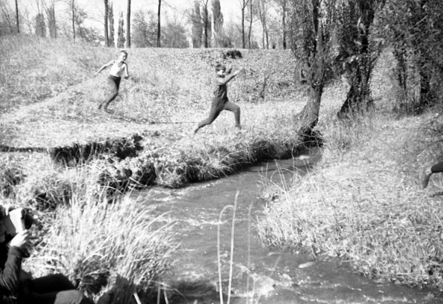

Last time I talked about the fact that during my childhood, nature was much closer to the inhabitants of the village than now. And she was much more alive. And most importantly, we and our parents were not particularly afraid of this proximity. Parents did not care that “someone had gone across the river,” or that “children alone were playing somewhere in the Cossack robbers”. And not because of some callousness and lack of love for children, but rather because the environment of the village was considered quite safe in those years.
It was "our territory." Territory of games, running around, little adventures and ... big competitions. Thanks to the photo library of Yevgeny Iosifovich Zhukov, I remembered about one school tradition that took place during the time of the “primary school”. Namely - the traditional cross-country autumn cross-country races. All classes participated in them - from the 1st to the 10th. And they passed in the immediate vicinity of the school, where, in fact, this very area began. The photographs show the cross, which, I think, took place in the autumn of 1967, or 1968. The place of behavior is somewhere between the village and the Brigade.
In addition to resurrected by photographs, sensations remained in my memory. Autumn smells of decaying fields. The exciting excitement of a school crowd lined up in disordered rows. Encouraging the cries of fans (ranging from the thin, almost mosquito squeak of babies, through the piggy squeal of girls, the Tyrolean falsetto of the breaking voices of high school students, to the seductive basses of adults). Dense and sun-smelling dust comes from a path broken by hundreds of runners. Heart palpitations at the start. A desperate lack of oxygen at the finish. Looking forward to the announcement of the results. And something else that was irretrievably lost along with childhood ...
It was "our territory." Territory of games, running around, little adventures and ... big competitions. Thanks to the photo library of Yevgeny Iosifovich Zhukov, I remembered about one school tradition that took place during the time of the “primary school”. Namely - the traditional cross-country autumn cross-country races. All classes participated in them - from the 1st to the 10th. And they passed in the immediate vicinity of the school, where, in fact, this very area began. The photographs show the cross, which, I think, took place in the autumn of 1967, or 1968. The place of behavior is somewhere between the village and the Brigade.
In addition to resurrected by photographs, sensations remained in my memory. Autumn smells of decaying fields. The exciting excitement of a school crowd lined up in disordered rows. Encouraging the cries of fans (ranging from the thin, almost mosquito squeak of babies, through the piggy squeal of girls, the Tyrolean falsetto of the breaking voices of high school students, to the seductive basses of adults). Dense and sun-smelling dust comes from a path broken by hundreds of runners. Heart palpitations at the start. A desperate lack of oxygen at the finish. Looking forward to the announcement of the results. And something else that was irretrievably lost along with childhood ...
